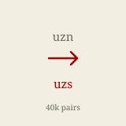
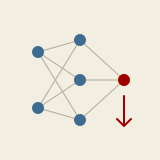

|
Mironshoh Inomjonov
I'm a Machine Learning Engineer at tilmoch.ai, where I work on
research and engineering for NLP and Machine Translation, mostly for Uzbek and other Turkic languages.
These are low-resource languages that mainstream models handle poorly simply because so little data
exists for them. My work runs across that whole pipeline — building translation datasets,
training models on top of them, and evaluating how well they actually do.
Outside of that I like building things from scratch to understand them properly: autodiff engines,
CUDA kernels, and reimplementations of papers I want to know inside out.
Github /
LinkedIn
|
|
Research
I'm interested in Machine Translation and NLP for low-resource languages. Most of my research is on
Uzbek and other Turkic languages.
|
|

|
Filling the Gap for Uzbek: Creating Translation Resources for Southern Uzbek
Mukhammadsaid Mamasaidov,
Azizullah Aral,
Abror Shopulatov,
Mironshoh Inomjonov
WMT, 2025
paper
/
arXiv
/
model
/
dataset
/
code
Southern Uzbek has around 5 million speakers in Afghanistan, yet differs from Northern Uzbek in
phonology, lexicon and orthography enough that existing systems fail on it. We built a 997-sentence
evaluation set and nearly 40,000 parallel pairs from dictionaries, literature and the web, trained a
translation model, and added a post-processing step for Arabic-script word boundaries. All of it is
openly available.
|
|

|
neurograd
Mironshoh Inomjonov
Python, 2025
code
/
micrograd
An automatic differentiation library in the spirit of micrograd, extended from scalar to vector
operations. It ships Neuron, Layer and MLP primitives with
ReLU and tanh, so you can define a network and train it end to end on top of the engine.
|
|
tilmoch.ai
|
Machine Learning Engineer. Research and engineering on NLP and Machine Translation.
Tilmoch is a translation engine built for Central Asia, covering Uzbek, Kazakh, Karakalpak and Turkish,
and reaching noticeably better accuracy on these languages than general-purpose translation services.
|
|
Tahrirchi
|
ML. NLP research and development for Uzbek and other Turkic languages, spanning
grammatical error correction and machine translation. Tilmoch grew out of this work.
|
|